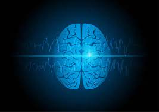

EPILEPSIA JUVENIL: Morte súbita noturna:
Foi observado que a taxa de mortalidade de jovens aumentou, e uma das maiores causadoras de tal condição é a Epilepsia. Muitas pessoas sentem os sintomas dessa doença, como a convulsão, que se manifesta repentinamente, sem uma causa definida, o indivíduo perde a consciência e muitas vezes não lembra do quhe aconteceu. Tendo em vista tudo isso, essa condição pode causar algo ainda pior, a morte súbita noturna.
Doença causada por descargas neuronais.

Sintomas da Epilepsia: Inicialmente a Epilepsia se divide em:
-Ataque Epilépticos: São basicamente crises de convulsão que envolvem espasmos e contrações musculares em todo corpo, muita saliva e respiração ofegante;
-Crise de ausência: Nesse tipo de Epilesia, o indivíduo fica com um olhar fixo e não se comunica com as pessoas ao seu redor;
-Crises parciais simples: Esse tipo de Epilepsia é caracterizada por distorções da percepção de si mesmo e a pessoa perde, por um tempo, a habilidade de controlar ou ter discernimento dos seus movimentos;
-Crise parcial complexa: Tipo de Epilepsia que envolve a perda de consciência.
Prevenção da Epilepsia:
Diante desses sintomas, existe em um dos tipos de Epilesia, no caso da Crise parcial complexa, há um perigo eminente de morte súbita noturna, ou seja, aquela que mata, porém não tem uma ameaça visível no dia anterior a morte do indivíduo.
Infelizmente, não dá para conter o desenvolvimento da Epilesia no indivíduo, mas é possível fugir de situações que desencadeiam as mesmas, como dormir pouco, beber álcool e permanecer em locais com luzes estroboscópicas, que são aquelas luzes encontradas em festas, a maioria coloridas, além disso, é muito importante a alimentação adequada e evitar ficar de jejum prolongado.
Como proceder diante de uma crise epiléptica(convulsiva)?
1-Primeiramente, mantenha a calma;
2-Afaste imediatamente objetos perfurantes da vítima;
3-Proteja a cabeça da vítima com travesseiros e almofadas, para que a mesma não bata a cabeça com muito força;
4-Nunca coloque nada na boca da vítima;
5-Depois da crise, o ideal é lateralizar a vítima;
6-É ideal a convocação de serviços de emergência.
Fatores de risco para a Epilesia:
A Epilesia pode ter duas origens, ou a genética, que estão lHigadas com a herança genética dos pais ou dos avós, ou os fatores externos, que tem muito a ver com nossos hábitos que fazem mal para a saúde, com não se alimentar bem, ficar em jejum e não dormir direito.
A seguir existem outros fatores, que variam de genéticos ou externos:
-Ter sofrido traumatismo craniano ou pancadas fortes na cabeça;
-Histórico familiar;
-Mal formações congênitas no cérebro;
-Arritmias cardíacas.
Para onde ligar em casos de crises epilépticas(convulsivas)?
Para qualquer tratamento que seja imediato, e requer um tratamento urgente, é recomendado que liguemos para o 190, que é o SAMU(Serviço de Atendimento Móvel de Urgência).

.jpeg)
.jpeg)
.jpeg)